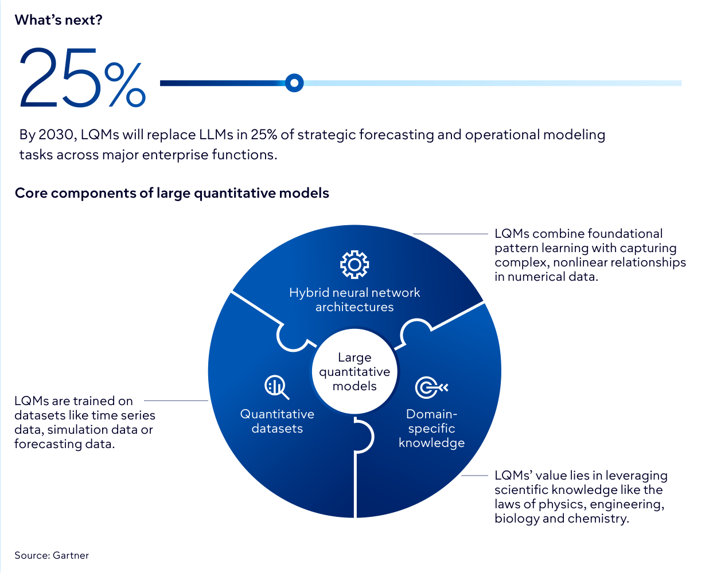

01
大型量化模型 Large Quantitative Models (LQMs)
主軸：開拓非文字 AI 前沿 ｜ 模組化神經網絡 × 確定性數值推理
什麼是大型量化模型？
專門處理和分析量化數據的模組化混合神經網絡架構。它結合了確定性計算、建立在既有數學公式、統計方法與數值算法之上的能力，精確模擬複雜非線性系統。
為什麼現在爆發？ (Why Trending)
企業在 GenAI 的龐大投資無法覆蓋數值計算場景。LLM 的本質是「機率式猜測」，在嚴謹數學推理上頻繁出錯且 Token 推理成本昂貴。LQM 專為數值運算打造，記憶體與算力消耗極低，更能深度結合物理、工程、生物與化學等科學定律。
25%
到 2030 年，LQM 將在主要企業功能中，取代 25% 策略預測與營運建模任務中的 LLM。

圖 4.1：LQM 核心架構（混合神經網絡＋領域知識＋時間序列）
四步落地行動方案 (Action Plan)
01 部署混合 AI 架構
預期成果：快速預測捷徑
結合 LLM 的自然語言對話能力與量化模型的確定性數值分析威力。
02 瞄準高價值數學場景
預期成果：前所未有的敏捷
優先導入財務風險建模、供應鏈物流排程、能源負載與農業分析。
03 建立數據驗證協定
預期成果：安全部署自主預測
確保所有數值輸入無瑕疵，防止污染下游預測模型導致重大偏差。
04 調整 ModelOps 策略
預期成果：降低算力與再訓練成本
持續監控部署漂移，防止過擬合並維持高產出運算效率。
👑 CIO 領導決策
- 主導：制定量化 AI 策略以改善預測與營運決策。
- 投資：優先佈局數學精準度能轉化為競爭壁壘的高價值場景。
- 推進：將 LQM 整合至複合式 AI (Composite AI) 體系。
🛠 IT 技術夥伴
- 數據與 AI 團隊：建構高精度時間序列與模擬管線。
- 企業架構師：建立 LQM 與現有 ERP/BI 無縫整合平台。
- ModelOps：持續監控模型性能、可解釋性與數據品質。
💼 業務夥伴 (Business)
- 營運主管：鎖定瓶頸流程，驗證實際預測改進指標。
- 財務與策略：將量化洞見應用於情境模擬與資本配置。
- 領域專家：校驗模型假設與輸入，確保業務合規。